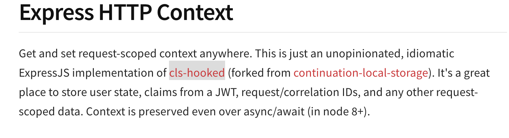
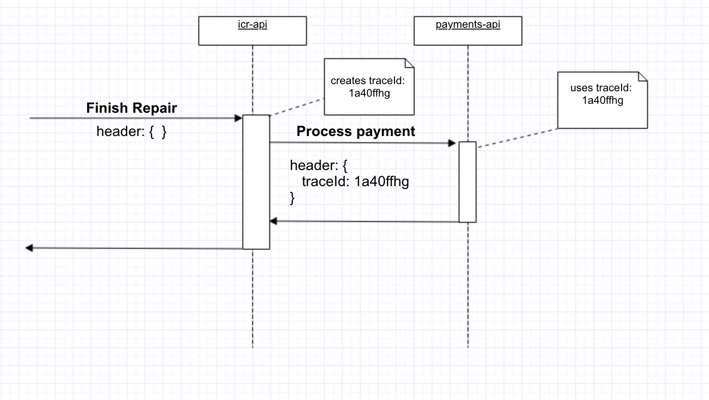

Logs

Good practices and Sumologic
Matias M. Montenegro
Rosario - Santa Fe- Argentina
What do we need logging for
- Debugging errors where developers don't have access to
- Monitoring metrics
- Alerting
- Data Science
Good data

- Easy to parse
- Reliable
The problems we had
- Log format was inconsistent
- key-value pairs: "KEY1=VAL1 KEY2=VAL2 ...."
- JSON
- Hard to trace related log messages
Problem: Log format was inconsistent Hard to debug errors
- We centralized the function that prints logs
- We normalized them using JSON format
- We added context data for traceability
Traceability
- We added a trace ID that groups together all related logs
- 
- https://www.npmjs.com/package/express-http-context
Traceability between internal API calls
-

Cloud-based Log Management platform
Example
Full Story

Sumologic > Metrics